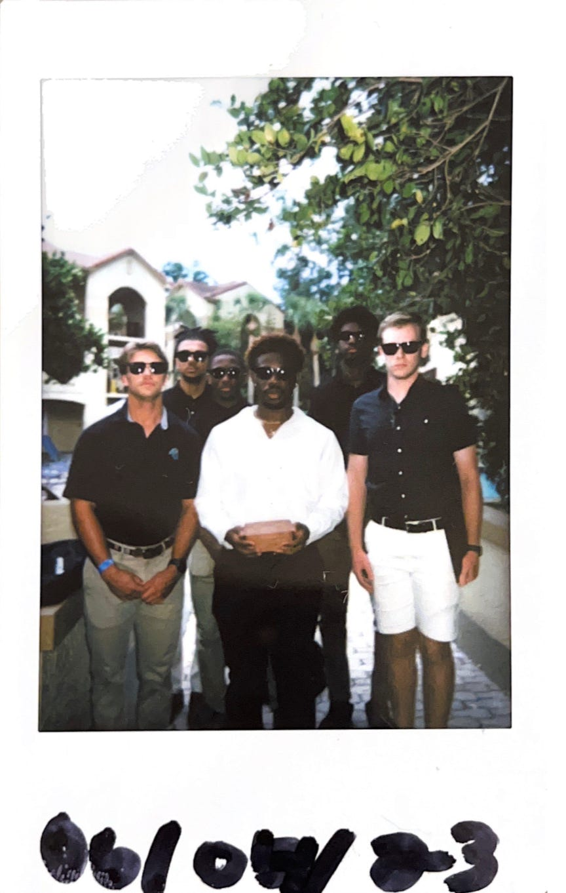

Introduction
My friends and I in Florida, Summer '23
- Personal Background: I have lived in the Charlotte area all of my life. I love sports such as Basketball, Football, Golf and a couple of others. I think my favorite to play would probably be Golf, even though some people believe that it is boring I think it is so fun and relaxing.
- Professional Background: I don't have any kind of professional background when it comes to the computer science realm but I have worked in customer service in restaurants for the past 3 ½ years. As exhausting as it has been, it has been a very valuable experience because it has taught me how to work as a team with people that are different from me and also what it means to work hard. It also taught me how to interact with customers and what the public values when it comes to what product they receive from you. Most people would rather wait a little longer for a good product than have something quick and it be a bad product. This lesson I know will help me in the future.
- Academic Background: I graduated from Hickory Ridge High School and then went to CPCC for two years and graduated with an Associates Degree. I then came here as a Computer Science major after taking two Java classes at CPCC. Now I am a Senior even though I will have to take a Super Senior Semester.
- Primary Computer Platform: Windows
- Courses I’m Taking, and Why:
- ITIS 3135: This class is very interesting to me because I know that I will learn some HTML, JavaScript, and CSS. Learning new languages is very valuable and I know that the professor will do a good job as long as I put in effort.
- ITSC 2181: I do want to understand more of how computers actually work.
- ITIS 3310: Learning how to design the actual software architecture is such an important skill and having the ability to do it puts you at a good advantage.
- ITSC 3146: I have little to no knowledge on different Computer Systems and how they work so this class is very beneficial for me to get a good understanding of them.
- ITSC 3155: Getting comfortable with designing projects on a larger scale and learning how to design them before coding is so important for me to understand before I go further in my career.